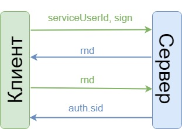

Доверительная (obsolete)¶
Важно
Данный способ аутентификации через auth.sid будет поддерживаться для реализованных интеграций. Для новых интеграций нужно использовать аутентификацию по протоколу OpenId Connect.
Предупреждение
Данный вид аутентификации доступен только для Компаний-Партнеров Удостоверяющего Центра.
- Компания-Партнер Удостоверяющего Центра
Это организации, которые имеют у себя аккредитованное рабочее место Удостоверяющего центра. Они самостоятельно могут удостоверить личность пользователя, проверить документы и создать запрос на сертификат.
Доверительная аутентификация позволяет получить auth.sid (obsolete), используя аутентификацию пользователя в доверенной системе Компании-Партнера. Получение auth.sid состоит из двух шагов. Сначала вы инициализируете аутентификацию: передаете серверу данные о пользователе. После этого, вторым шагом, вы подтверждаете аутентификацию.
Но для того, чтобы воспользоваться доверительной аутентификацией, необходимо при первом входе пользователя произвести связывание пользователей систем Партнера и Контура.
0. Связывание пользователей¶
Данный метод позволяет внешней доверенной системе самостоятельно связывать пользователя Контура со своим по номеру телефона пользователя.
Для получения auth.sid (obsolete) пользователя при помощи доверительной аутентификации необходимо, чтобы пользователь Контура был связан с пользователем доверенной системы. Связь может происходить следующим образом:
вручную техподдержкой или продуктами на стороне Контура по запросу Компании-Партнера,
доверенной системе разрешается самостоятельно связывать определенных пользователей Контура с любым своим пользователем по номеру телефона пользователя — требуется отдельное разрешение, которое проставляется на api-key (obsolete) Компании-Партнера.
Запрос:
PUT /auth/v5.16/register-external-service-id?api-key=value&serviceUserId=value&phone=value
Где:
phone - объект идентификации, телефон пользователя;
serviceUserId - идентификатор пользователя в доверенной системе;
api-key - api-key (obsolete).
Коды ответов:
200(OK) - запрос выполнен успешно.
400(Bad Request) - отсутствуют необходимые параметры.
401(Unauthorized) - api-key не указан.
403(Forbidden) - возможные коды ошибок при запросе связывания:
ForbiddenForTargetUser - пользователь, под которого пытаются войти, является администратором. Вход под администратором запрещен.
InvalidApiKey - невалидный api-key (obsolete).
NotId - не указан идентификатор пользователя доверенной системы.
UserNotFound - пользователь Контура не найден.
UserNotUniq - пользователь с указанным идентификатором не уникален.
UnknownError - неизвестная ошибка.
500(InternalServerError).
1. Инициализация¶
доверенная система (клиент) отправляет идентификатор своего пользователя (serviceUserId);
доверенная система (клиент) подписывает данные запроса своим ключом, на этом шаге допускается возможность использования криптографии RSA, сертификат и ключ для данного алгоритма криптографии можно получить, например, в ОС Windows →, примеры работы с использованием OpenSSL →;
сервер формирует случайный ключ (key) и передает его доверенной системе.
Запрос:
POST /auth/v5.16/authenticate-by-truster?apiKey=value&credential=value×tamp=value&serviceUserId=value
Где:
serviceUserId - идентификатор пользователя в доверенной системе;
apiKey - api-key (obsolete);
credential - объект идентификации может принимать значения:
thumbprint - отпечаток сертификата для идентификации пользователя;
phone - 10-значный номер телефона для идентификации пользователя;
snils - 11-значный СНИЛС для идентификации пользователя;
timestamp - метка времени.
Тело запроса:
Открепленная подпись, передается в виде массива байтов без всякого дополнительного кодирования. Подписываются следующие данные (кодировка UTF-8): string.Format("apikey={0}\r\nid={1}\r\ntimestamp={2}\r\n", ApiKey.ToLower(), Id, Timestamp), где:
api-key (obsolete) в нижнем регистре;
id - объект идентификации, параметр credential из query-string запроса;
timestamp - метка времени (в формате «dd.MM.yyyy HH:mm:ss», время GMT).
Подпись должна быть сформирована в соответствии с требованиями КриптоПро: при формировании подписи подписывается результат выполнения hash-функции, соответствующей сертификату, над данными строки, после чего он оборачивается в соответствии с КриптоПро.
Ответ:
Key - случайная строка.
Link - объект, который описывает ссылку для подтверждения запроса аутентификации:
Link.Rel - описание ссылки,
Link.Href - адрес ссылки.
Коды ответов:
200(OK) - запрос выполнен успешно.
400(Bad Request).
401(Unauthorized) - api-key не указан.
500(InternalServerError).
2. Подтверждение¶
Доверенная система получает случайное значение rnd и генерирует запрос, где в параметре указывает этот rnd.
Сервер проверяет тот ли этот rnd, который он отправлял ранее, в случае успеха отдает auth.sid.
Запрос:
POST /auth/v5.16/approve-truster?key=value&id=value&apiKey=value
Где:
key - случайное значение rnd;
apiKey - api-key (obsolete);
id - объект идентификации, параметр credential из query-string запроса Инициализации.
Ответ:
Sid - идентификатор сессии auth.sid (obsolete).
Коды ответов:
200(OK) - запрос выполнен успешно.
400(Bad Request) - отсутствуют необходимые параметры.
401(Unauthorized) - api-key не указан.
500(InternalServerError).